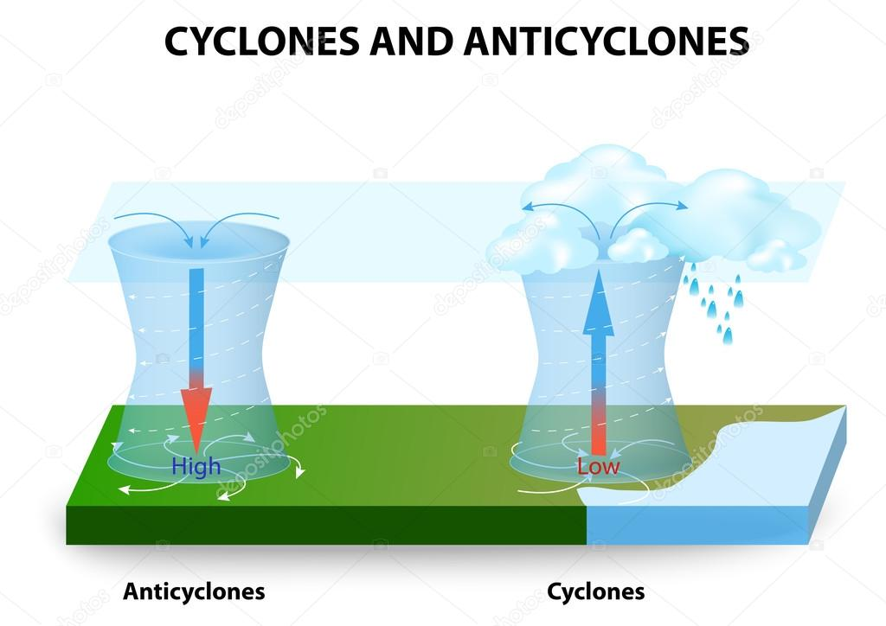

Циркулационни фактори
Циркулационните фактори обхващат:
Обща атмосферна циркулация
Разпределението на атмосферното налягане е причина за формирането на общата атмосферна циркулация на Земята – движения на въздуха от районите с високо атмосферно налягане към районите с ниско атмосферно налягане. Във височина се развива противоположно движение на въздуха в обратна посока и по този начин се образуват циркулационни кръгове. В атмосферната циркулация се образуват три циркулационни зони: зона на пасатна циркулация (тропици – екватор), зона на западните ветрове и на полярна циркулация (полюси-умерени ширини).
 "
"
Циклони и антициклони
Циклони
Циклонът представлява спираловидното възходящо движение на въздуха в посока от периферията към центъра на въздушната маса в резултат на кръгово разположение на изобари, понижаващи своите стойности в същата посока. Ветровете в циклона духат обратно на часовниковата стрелка в Северното полукълбо и по посока на часовниковата стрелка в Южното.
Антициклони
Антициклонът е въздушна маса, в която въздухът се движи низходящо от центъра към периферията, където налягането е по-ниско. В антициклоните винаги има само една въздушна маса – топла или студена. Те се въртят в посока на часовниковата стрелка в Северното полукълбо и в посока, противоположна на часовниковата стрелка в Южното.

Ветрове
Вятърът представлява движение на въздушните маси от места с високо към места с ниско атмосферно налягане. При вятъра въздухът се движи в две направления спрямо земята – хоризонтално и вертикално. В България ветровете са предимно хоризонтални поради географските особености на района.